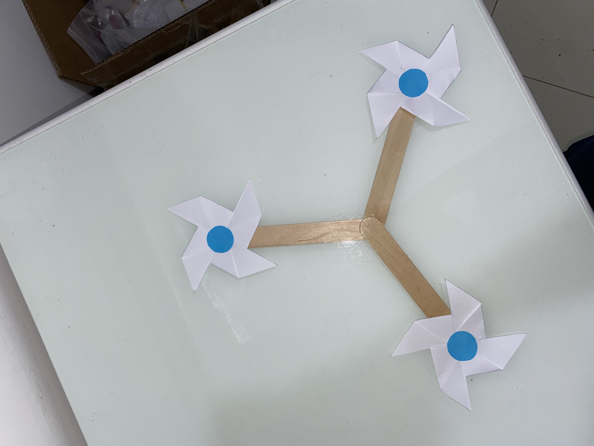
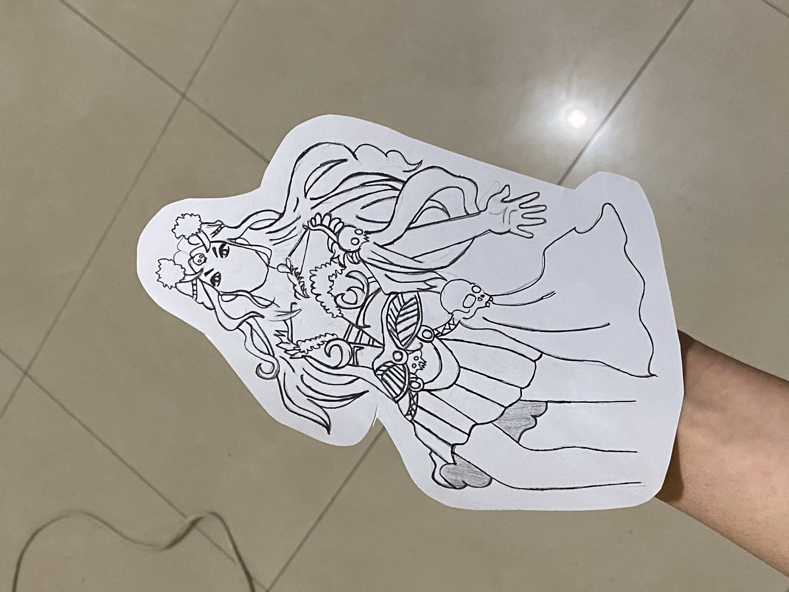
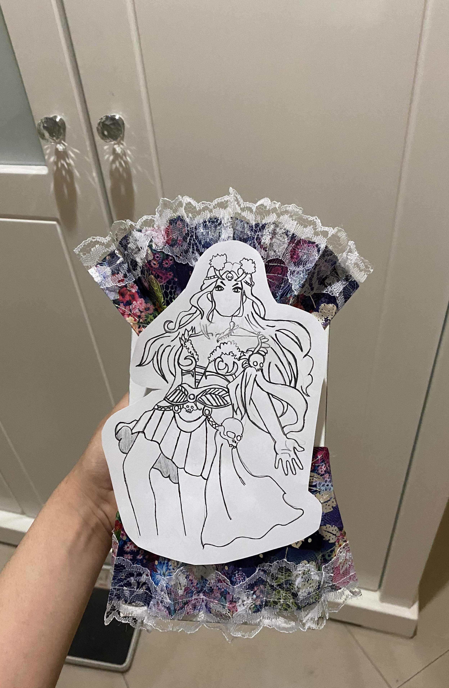
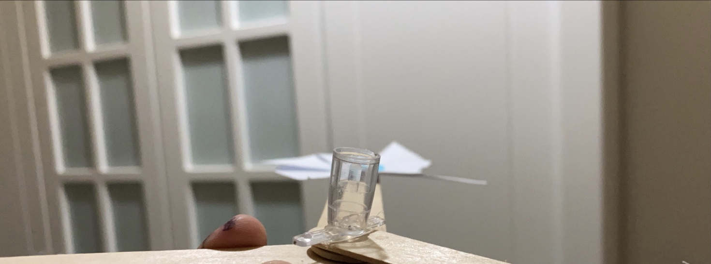

Week 4:
This week our assignment was to either create a kinetic sculpture or to create a quick prototype as a final project. I wanted to leave my options open for my final project, so I went with the first option. I originally wanted to create something complicated, such as a fan with fins that intertwined without actually colliding. After multiple tests, I realized it just wasn't possible with the skillset that I have for now. I knew that I might not be able to create something that stands out in practicality, so I had to focus more on the design. Looking around my room for inspiration, I found an old fan with a flowery pattern. The Greek goddess Persephone immediately came into mind. Ever since I read Percy Jackson and the Olympians, I've kept reading about Greek Mythology and its tales. I thought it would be fun to honor my interest. And it was!
I started by making paper fans and gluing blue circles in the middle of it to resemble a flower's pistil. After making 3, I then glued them onto 3 popsicle sticks I had already glued together to act as fan fins.
.JPG)

After that, I drew Persephone on plain white paper while looking at Brittni Jensen's drawing of her.
I cut up my fan into two parts and glued them onto an empty tissue box, making sure to keep the open side on the back. That's where I wanted to place my motor to control the fan.

I glued the drawing onto the front, on top of the fan's cloth.
I cut the tissue box a bit more from the behind to place the motor in a high place. I wanted the popsicle sticks to move like a fan. That wouldn't be possible if I placed the motor in the middle of the box.
I cut out a few pieces of cardboard to hold up the motor and the tissue box itself since it seemed to lose balance a few times. After taping the motor in place and making sure it wouldn't move, I had to figure out how to make the popsicle sticks stick to the motor. Hot glue alone wasn't enough, so I had to be a little creative. I broke a part of my pen and took its cap.I poured hot glue into half of the cap, then placed a piece of paper in the middle. After it dried, I glued the motor to the piece of paper. I didn't expect it to work, but it did! For the code, I used the same one we used in one of our lab sessions. I only changed the delay time.
With that, I finished my sculpture. I'm very pleased with the outcome! I know I could've done things smoother, but there's always another chance to learn more. If I wasn't going to make these mistakes now, I would end up making them later. Maybe even at an unconvenient time. This was a great opportunity to figure out the small details someone needs to think about before starting a sculpture.